User Research · Project Lead · Human Centred Design
WBeauty - a peer-to-peer beauty service platform for Wellesley students
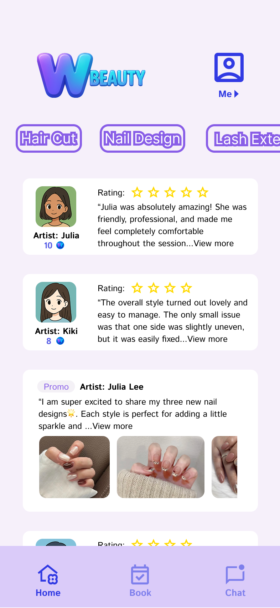
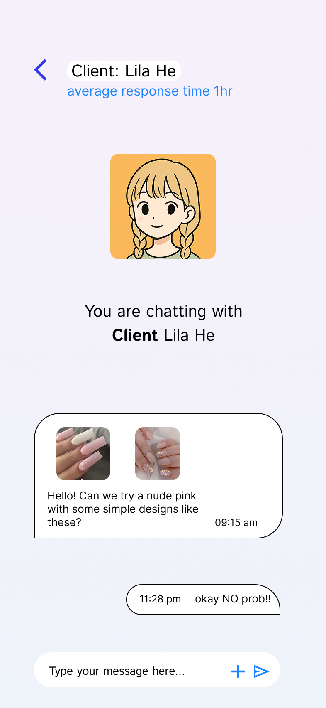
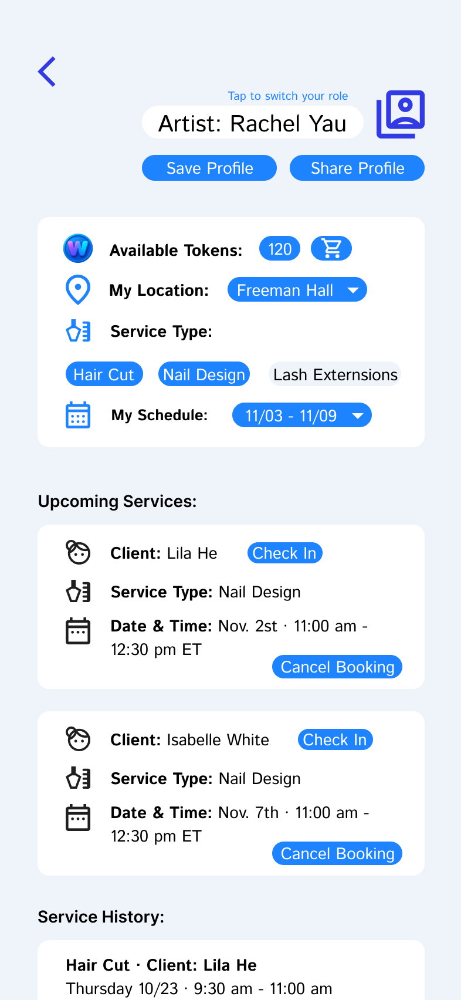
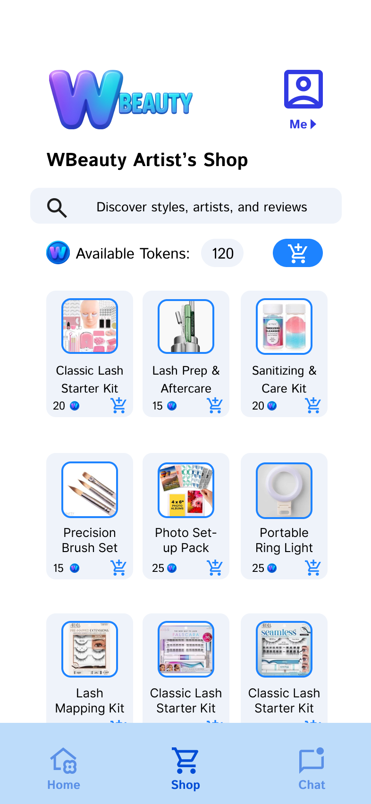
The Problem
Many Wellesley students, especially those juggling classes, extracurriculars, and part-time jobs, struggle to access affordable, high-quality beauty services like haircuts, nail care, and lash extensions. The town of Wellesley is expensive, so students often travel as far as Chinatown in Boston for reasonably priced services, which is a trip that costs hours they don’t have.
Meanwhile, other students have these skills and want to practice them, like aspiring nail techs building toward certification, students who cut hair for friends, but have no structured way to find clients, promote their work, or be trusted by strangers.
Existing informal channels like Yik Yak and Sidechat offer no verification, no reviews, and no booking structure. Therefore, my partner and I saw a clear opportunity: a campus-specific, peer-to-peer platform where students can be both providers and receivers of beauty services.
Design question: How might we help Wellesley students exchange beauty services in a way that feels safe, affordable, and convenient for both sides of the service exchange?
My Role
I led this two-person project from 0 to 1. I was responsible for:
- Designing the interview protocol and leading the ideation, prototyping, and evaluation phases
- The UX/UI design of the final prototype, where I established the design system (colors, typography, components, layout rules) and designed or redesigned every screen to that standard
- Planning and running both rounds of moderated usability testing, and translating findings into design iterations
- The visual identity: color system, logo, typography, and component consistency
Research: Understanding How Students Actually Get These Services
We began with contextual inquiry interviews with current Wellesley students, structured around a 13-question protocol I helped design. We asked about routines, motivations (big events turned out to be a major trigger), how they find providers today, and what would make them trust a fellow student with a beauty service.
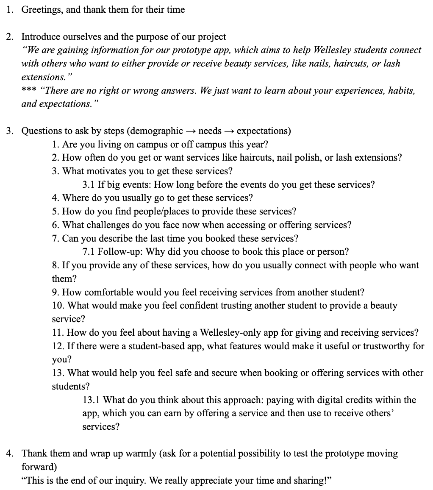
Key insights
- Cost and travel time are the core pain points. Students overpay locally or lose half a day traveling to Boston.
- Trust became a crucial factor. Students were open to peer services, but only with verification, reviews, and a way to communicate before committing.
- Providers need visibility and community exposure. Student providers wanted to showcase work, build a client base, and get inspiration.
- Money exchange between students felt awkward. This led to a token system, where students can earn credits by providing, spend them receiving.
Personas
Julia: an artistic studio-art major working toward her nail-technician certification (provider-side goals).
Lila: a busy, introverted CS major who hopes to maintain a professional appearance for interviews (receiver-side goals).
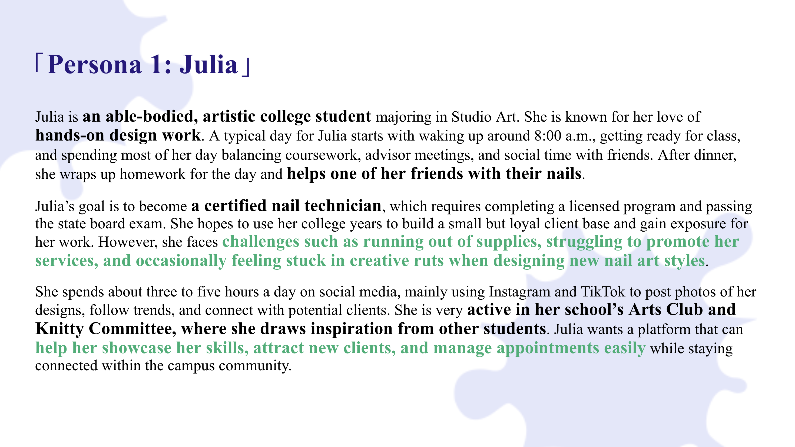
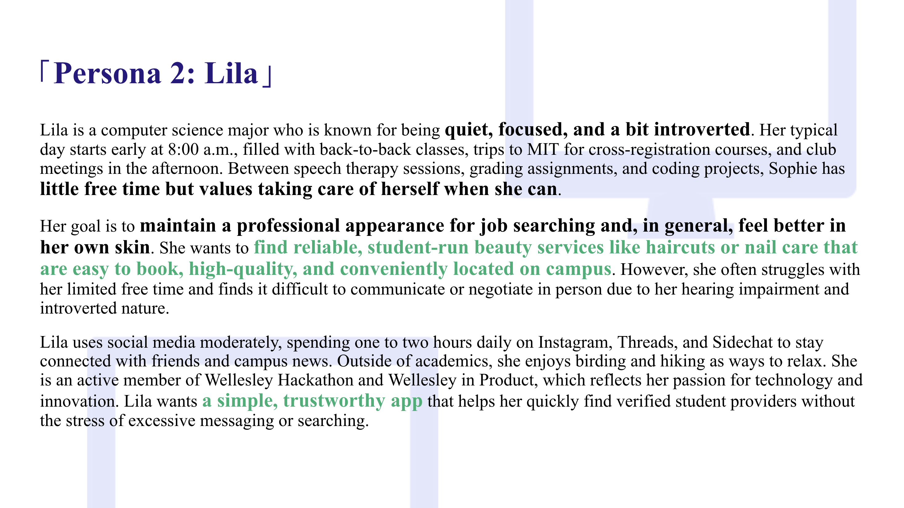
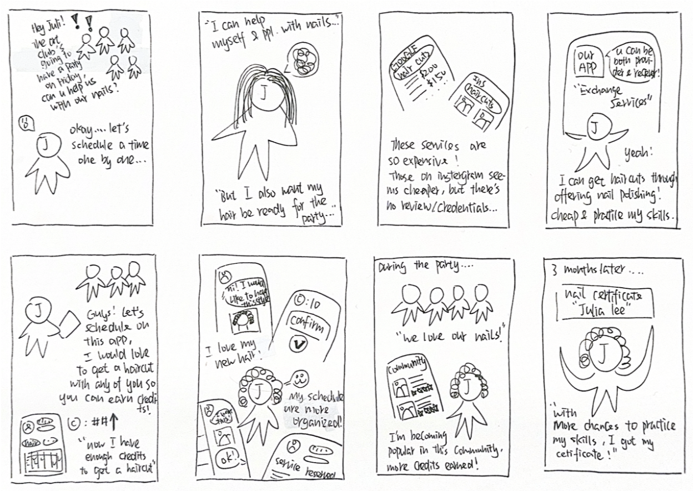
Writing storyboards for both personas forced an important realization early: the same student might be Julia on Monday and Lila on Friday. The app couldn't treat providers and receivers as separate audiences. It had to make users being both roles effortless.
Ideation & Early Design Decisions
I sketched multiple layout directions, focusing on four hard problems: distinguishing artist vs. client roles, the booking workflow, profile clarity, and chat integration.
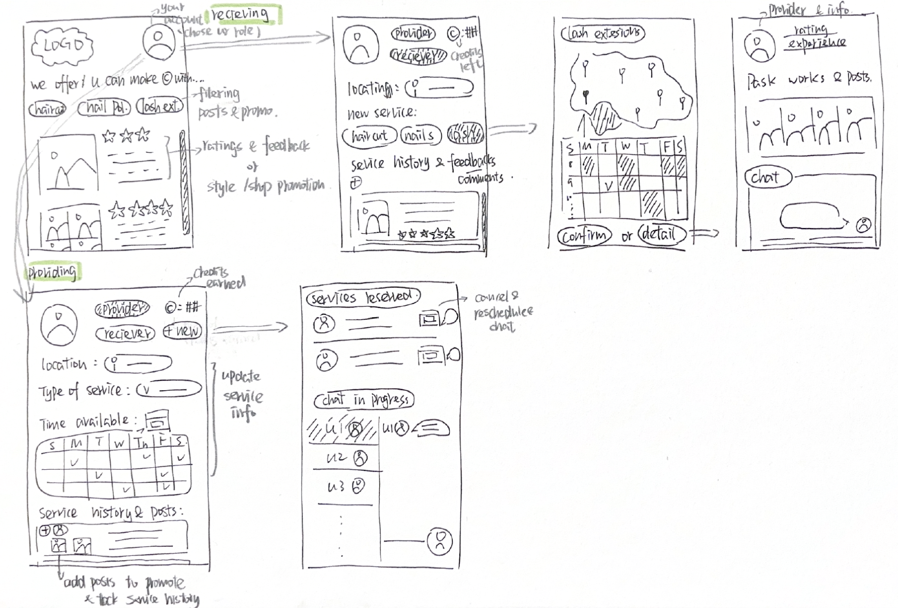
After critique, I committed to the defining structural decision: every user is both artist and client, and can switch roles with a single tap. Supporting decisions: a token economy (with a toolkit shop to spend earned tokens), chat before booking, and QR-code attendance confirmation that triggers the token transfer, so tokens only transfer when the service verifiably happened.
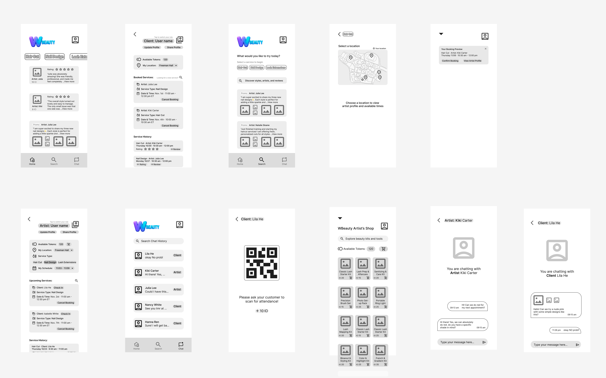
Usability Testing, Round 1 (Low-Fidelity)
Participants completed four core tasks, checking a profile, booking, switching roles, and chatting, followed by a questionnaire.
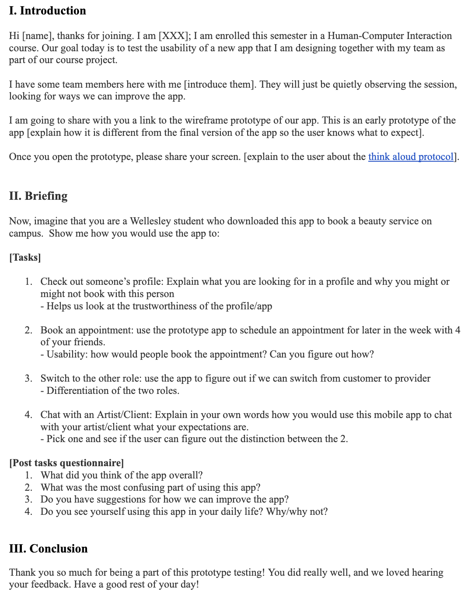
What worked: participants found the design intuitive, praising booking cancellation and visible service history.
What didn’t:
| Problem Observed | What we learned |
|---|---|
| Users tried to book from the homepage, not the booking tab | Promotional content created an expectation of action, not just browsing |
| Artists struggled to find the shop | The shop was buried; providers’ key feature had no visibility |
| Users saw their token balance but not its purpose | The token system needed to explain itself in context |
| Some users missed the bottom tab bar | Navigation hierarchy was too weak |
| Users expected reply-time info under posts | Trust requires setting communication expectations |
Iterations after Round 1 Testing
- Added homepage-booking: connected posts and promotions directly into the booking flow — making the “wrong” path official
- Differentiate the tab bars by role: clients get a booking-centered bar; artists get a shop-centered one
- Added average reply time, multi-artist map pins, in-profile cancellation, and larger fonts
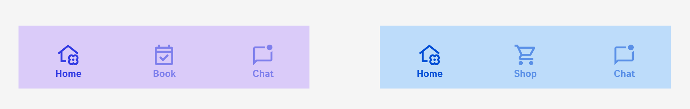
High-Fidelity Design
- Two-color role system: pinkish purple (#F6F0FA) client side, blue (#EFF3FA) artist side — so users always know which mode they’re in
- Consistency systems: Istok Web throughout; figure-ground on clickable elements; shared tab-bar structure; Google’s icon library for recognizable patterns
- New functions at hi-fi: role-based tab bars, shop item detail pages, in-profile booking cancellation
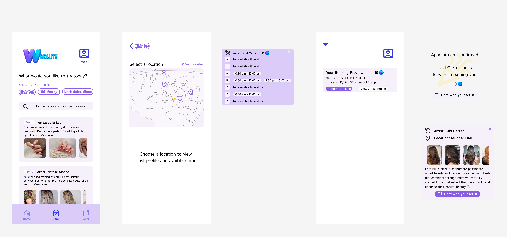
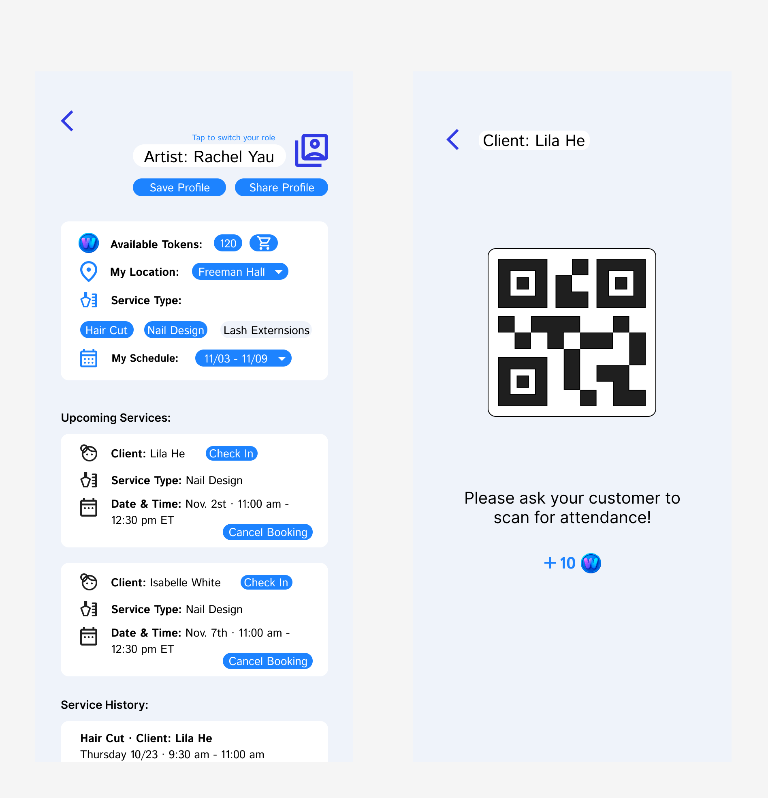
Functional Prototype
Explore the artist side → Open prototype in Figma →
Usability Testing, Round 2 (High-Fidelity)
| Task | Success | Notes |
|---|---|---|
| Book an appointment & view a profile | 4/4 (100%) | 3 of 4 started from the homepage, validating the Round 1 decision |
| Switch between client and artist roles | 4/4 (100%) | Users cited the color differentiation as helpful |
| Use the chat function | 3/4 (75%) | The one failure came from overlooking the tab bar |
Overall: 92% task success. The color-separated dual-role system was the feature users understood most clearly.
What I’d Do Next
- Apply Fitts’s Law to touch targets: several users reported that the buttons tested were too small
- Promote the toolkit shop on first launch for artists
- Add a persistent back-to-booking button or breadcrumb so users who were directed to chat can return and finish booking without losing context